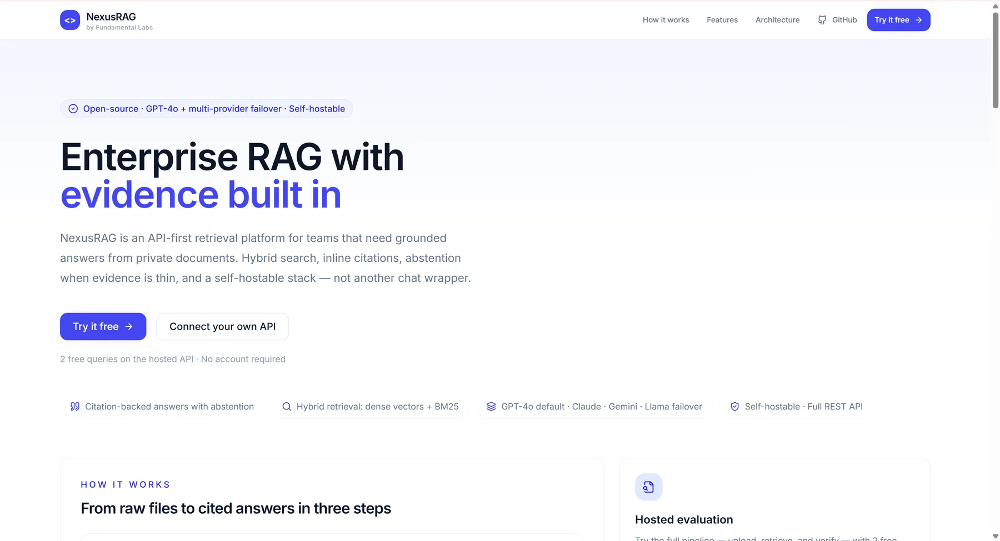
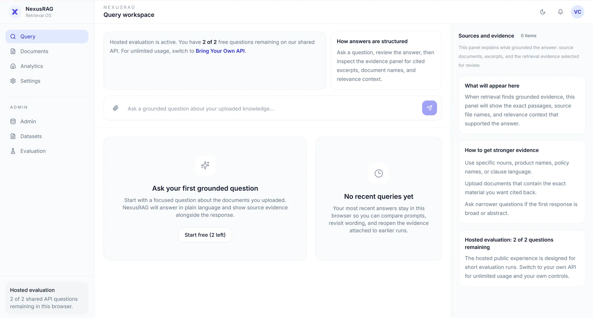
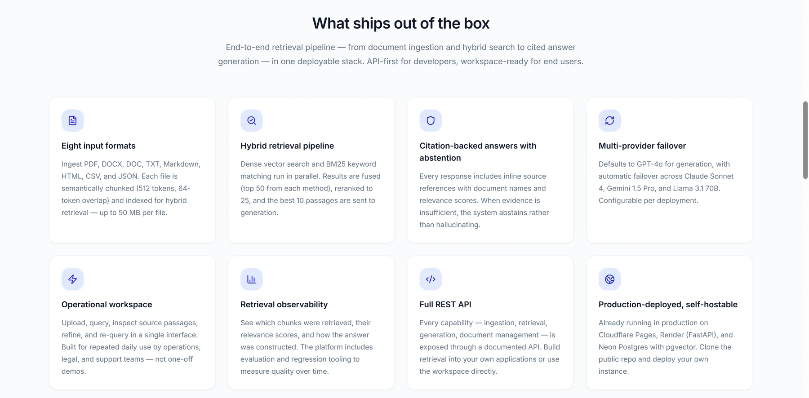

Project
NexusRAG
A self-hostable retrieval platform with evidence built in — hybrid search, inline citations, and a system that would rather say “not enough evidence” than guess.
- Role
- Solo — design, backend, frontend, deployment
- Timeline
- Apr 2026
- Stack
- FastAPI · PostgreSQL + pgvector · Next.js
- Links
- Source on GitHub ↗
50 + 50lexical and dense candidates per question
Top 10passages kept after fusion and re-ranking
4LLM providers with automatic failover
160automated tests
Screenshots



01The problem
Most “chat with your PDFs” tools embed text chunks, grab the nearest few and hope. They miss exact terms — product codes, clause numbers, names — and they fail silently, giving a confident answer you can’t check.
02What I built
NexusRAG treats retrieval as the product: two search methods in parallel, a principled merge, explicit evidence selection, and a gate that refuses to answer when the evidence is weak.
One Postgres database holds both indexes, so a hybrid query is two SQL statements, not two systems.
How a question is answered
- Ingest: PDFs and 7 other formats (up to 50 MB) are parsed and split into ~512-token chunks; one PostgreSQL database stores both a full-text index and a vector index.
- Search twice: keyword search and semantic vector search each return their top 50.
- Merge by rank: reciprocal-rank fusion combines the two lists, then filters remove duplicates, untrusted and stale results, leaving the best 10.
- Abstain if unsure: if the evidence scores are too low, the system says so instead of answering.
- Answer with citations: the LLM writes an answer with inline [1][2] citations, and a validator checks each citation is grounded.
Key engineering decisions
- Failover as a state machine: Gemini → GPT-4.1 mini → Claude → Llama 3.3 on Groq, with retries, backoff and cooldowns.
- One codebase, two modes: PostgreSQL + pgvector in the cloud, or SQLite + Qdrant locally — switched by one environment variable.
- Clean layering: nine layers where imports only flow downward; every component sits behind a typed interface so it can be swapped.
- Observability: every query records latency per stage, so regressions show up as numbers.
03Tech stack
| Backend | Python 3.11, FastAPI, Pydantic v2, psycopg3 |
|---|---|
| Search | PostgreSQL full-text (GIN) + pgvector (HNSW); SQLite FTS5 + Qdrant locally |
| Frontend | Next.js 14, React 18, TanStack Query, Tailwind |
| Deployment | Docker · Cloudflare Pages · Koyeb · Neon Postgres |
04Impact
- Every answer is either cited or withheld — no unsupported claims.
- Deployed end to end with a public demo that gives each visitor two free questions.
- ~25K lines of Python with 160 automated tests.
05What I learned
- Merging results by rank rather than raw score is what makes keyword and vector search work together.
- Next: plug in a sentence-transformer embedder and a cross-encoder re-ranker behind the existing interfaces, and publish recall and faithfulness benchmarks.
- The same hybrid idea powered my earlier PubMed search engine for the Information Retrieval module at QMUL.